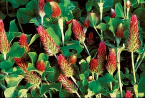

As more and more people recognize the many benefits of organic gardening methods, a fresh crop of organic fertilizers are sprouting on store shelves. Many are overpriced, and some are stunning rip-offs that reputable stores and catalogs should be ashamed to sell. The really amazing thing is that two of the best organic fertilizers are easily available to most of us absolutely free! (See below) It’s definitely a buyer-beware world out there. If you’re not careful, you could pay five, 10 or 4,000 times more than necessary to get the nitrogen and other nutrients you need. Here's what we found when we evaluated the pricing for 21 fertilizers:
How to Compare Fertilizer Prices
Nitrogen is a major nutrient that is likely to become deficient in garden soils, so we used it to compare prices. The prices for blended organic fertilizers sold in garden stores and home improvement centers tend to cost more than a bag of soy or alfalfa meal at a farm supply store. Also, dry fertilizers are almost always a much better buy per pound of nitrogen than liquid products.
FREE Fertilizers
Grass clippings, 2 to 5% nitrogen
Yard waste compost, 1 to 4% nitrogen
Meal-based Fertilizers, price per pound of nitrogen
Cottonseed meal (6-1-1) $7.25
Pro-Gro (5-3-4) $11.10
Alfalfa meal (3-1-2) $6.60
Soybean meal (7-2-1) $4.00
Espoma Garden-Tone (4-6-6) $32.40
Peace of Mind All Purpose (5-5-5) $39.75
Manure-based Fertilizers, price per pound of nitrogen
Fertrell Lawn & Garden (3-2-3) $12.15
Black Hen (2-3-2) $16.00
Miracle Gro (3-2-3) $24.15
Bat Guano (10-3-1) $30.00
Bradfield Tomato & Vegetable (3-3-3) $33.25
Liquid Organic Fertilizers, price per pound of nitrogen
Age Old Organics Grow (12-6-6) $46.50
Maxicrop (5-1-1) $63.60
Ferti-lome Fish (5-1-1) $63.60
FoxFarm Grow Big (6-4-4) $79.70
Earth Juice (2-1-1) $239.00
TerraCycle Plant Food (.03-.002-.02) $16,987.00
Non-organic Liquid Fertilizer
Pennington’s Plant Food (.02-.02-.02) $4,067
You can put various products to the test using this simple equation:
All products labeled as “fertilizer” must be labeled with their content of the three major plant nutrients - nitrogen, phosphorous and potassium (N-P-K). Most organic fertilizers are bulkier than synthetic chemical products, so their N-P-K percentages are typically lower than synthetic products, and their application rates are higher.
Also, because organic products are biologically active, their N-P-K numbers may change somewhat from batch to batch and over time. Because of this, it can be hard for producers to comply with the labeling laws. As a result, some excellent organic fertilizer options, such as compost, often are not even labeled as a “fertilizer.” One of the best free fertilizers, grass clippings, break down so quickly that they can’t be bagged and sold.
But make no mistake, compost and grass clippings do what fertilizers are supposed to do: They enrich the soil with nutrients that plants and microscopic soil life-forms are eager to use. In most areas, you can easily collect grass clippings from your neighborhood, bagged and set out ready to bring home. And many communities make yardwaste compost (made mainly from grass clippings and leaves) available for free.
So, if you can get free clippings or compost, how much should you use? Here are guidelines prepared with help from soil scientists at Woods End Laboratory in Maine.
Grass clippings are one of the best organic fertilizers. Not only because it’s easy to find free local sources, but also because the clippings do double duty preventing weeds and conserving soil moisture when used as mulch - two things other fertilizers cannot do. Nitrogen content of clippings will vary, with fresh grass collected in spring from fertilized lawns topping 5 percent nitrogen, while clippings from later in the year or from unfertilized lawns will likely contain around 2 percent nitrogen. (Be sure to avoid clippings from those “perfect” lawns that have been treated with herbicides.)
In most regions just a half-inch of fresh clippings each spring - that’s about six 5-gallon buckets per 100 square feet - mixed into the soil, or a 1- to 2-inch layer used as a surface mulch, will provide all the nutrients most crops need for a full season of growth.
You can make compost from your yard, garden and kitchen wastes, but if you have a large garden, you’ll probably want more compost than you can make from your own yard. Many communities offer free yard waste compost, or you can look for compost made by local farmers at Local Harvest (for more specific advice about composting, check out Compost Made Easy).
Compost is a bulky fertilizer that typically contains about 1 percent nitrogen (composted manure is closer to 3 percent nitrogen), but one of its advantages is that it releases nutrients very slowly, over a period of years rather than weeks or months. All the while, many strains of fungi and bacteria introduced to the soil from the compost form partnerships with plant roots, helping them to absorb or actually manufacture more nitrogen, phosphorous and other nutrients. Compost also helps soil hold more moisture.
Each time a crop is finished, spread a half-inch layer of compost over the soil. Twice that much is better, but even a scant quarter-inch blanket of compost will help maintain your soil’s fertility.
The soil’s ability to hold onto nutrients increases as your soil’s organic matter content increases. Organic matter also plays a role in suppressing soilborne diseases while helping to retain soil moisture. Using mulches of shredded leaves, old hay and grass clippings will help boost your soil’s organic matter content as the mulches slowly decompose into compost. Cover crops planted during periods when you are not growing food crops also help increase the soil’s fertility.
After three years of regularly adding compost and mulches, the soil’s organic matter content will increase by several percent. Just 3 percent organic matter translates to a nitrogen-holding capacity of more than 3 pounds of nitrogen per 100 square feet. About 15 percent of that nitrogen (about 0.4 pounds) is available to plants in any given year, because it is released slowly, as the organic matter decomposes. Use nitrogen-rich grass clippings as mulch, and you’ll have plenty of available nitrogen and other nutrients to meet the needs of most garden crops!
A survey of soil testing labs across the United States revealed that garden soils have too much fertilizer more often than too little. Adding too much can be just as bad for your crops as not applying enough. (A soil test every few years is a good idea.) If you apply grass clippings and/or compost according to the guidelines above, you will only need to use more concentrated - and costly - organic fertilizers in a few special circumstances. When you start with a balanced soil (a soil test will tell you this) and apply grass clippings, compost and mulches regularly, necessary nutrients usually will be replenished in the correct proportions.
If fertilizers sold in bags or bottles are easier for you to use than grass clippings or compost, nitrogen is the nutrient to use to guide your application rate, because it is the nutrient most likely to be depleted as you harvest your crops each season. Plants need the right amount of nitrogen to grow new stems, leaves and other parts. If they don’t get enough, they stay small and spindly, and never come close to their productive potential. If they get too much, they grow into huge plants that produce way behind schedule.
To complicate matters, if your soil doesn’t get regular additions of compost or organic mulches, it will have trouble holding on to the nitrogen you add. Nitrogen is a slippery nutrient, prone to volatilizing into thin air or washing away (that’s one of the reasons organic matter that holds nitrogen is so helpful). For most crops, you should replenish nitrogen to the tune of about one-third pound per 100 square feet of growing space each season. See the “How to Compare Fertilizer Prices” below, to find the best buys and avoid overpriced products.
There are also some situations when even gardeners with high levels of soil organic matter may want to apply supplemental fertilizers. Usually the reasons have to do with time and temperature.
In spring and fall, when soil temperatures are low, the biological processes that release nutrients from organic matter slow to a crawl. A fertilizer that quickly releases nitrogen (such as fish emulsion or blood meal) helps support strong, early growth of hungry cool-weather crops. Before planting big brassicas such as broccoli, cabbage and kale, and to help spring peas get off to a strong start, mix a half ration of one of these products into the soil before planting.
Tomatoes, peppers and other crops that stay in the ground all summer sometimes exhaust the soil’s supply of available nutrients by midsummer, just when they need it most. When the plants load up with fruit, you can prevent temporary shortfalls by mixing a light application of fertilizer into the top inch of soil over the plants’ root zones, topped off by a fresh helping of grass clippings for mulch. This “side dressing” of fertilizer and mulch work together to keep the plants productive longer.
Seedlings started indoors often benefit from light feeding starting two to three weeks after the seeds sprout. By then, they have used up food reserves provided by the seed, yet they are not free to forage for nutrients beyond the confines of their containers. A half ration of fish-based fertilizer, mixed into room temperature water, helps satisfy their nutrient needs until they are ready to be transplanted outdoors. You can also use a drenching of fish fertilizer to help wake up overwintered spinach, which usually is ready to produce a fine flush of leaves before the soil is warm enough to release its precious nutrients.
Sweet corn is famous for its need for nitrogen, and one crop can take a big bite from your soil’s nitrogen supply. To be sure your plants don’t run short of nitrogen, you have three options: 1) You could mix in a concentrated organic fertilizer before you plant, and then side dress with more as the plants grow. 2) You could precede the corn with a winter cover crop of hairy vetch, alfalfa or another nitrogen-fixing legume. When the plants are chopped down in late spring, just as they begin to bloom, the roots left behind in the soil will release enough nitrogen to get sweet corn off to a good start. More will become available as the surface mulch decomposes into organic matter. 3) Your best bet, if you can manage it, is to apply compost annually. In a three year study done at the Connecticut Agricultural Experiment Station, a 1-inch layer of leaf compost applied to soil only once a year made it possible to reduce the fertilizer sweet corn needed by half.
If you decide to buy an organic fertilizer, use the chart on below to estimate how much nitrogen you are getting for your money, keeping in mind that the best deals come in big packages.
Manure-based products are usually composted or processed to reduce odors, and you often can find high-quality manure-based fertilizers produced in your area that don’t carry environmental baggage from long-distance shipping.
You can fertilize your garden with alfalfa, soy, cottonseed or another plant meal by itself, or use a blended meal-based product. Meal-based fertilizers often include 12 or more ingredients to balance fast-release nitrogen sources such as meat, fish, alfalfa or cottonseed meal with other minerals and micronutrients. These fertilizers often are less bulky compared to manure-based products, and most provide a broad array of nutrients.
Finally, we must mention products that have been dressed up with microbes, enzymes, humic acids and other substances. These extras might be helpful if you are trying to bring dead soil to life, but in a garden that is well-nourished with compost and organic mulches, they are a waste of time and money. Microbes come along for free in compost, and earthworms never charge a cent for producing enzymes and humic acids. The diverse soil life beneath your feet produces everything your crops need; all you need to do is feed it what it wants - a steady diet of organic matter.
|
BARBARA PLEASANT You can build better garden soil by applying the right types and amounts of organic fertilizers. |
WALTER CHANDOHA One of the best options for organic fertilizer is also the cheapest. Putting fresh grass clippings in your garden is a great way to add nitrogen to your soil. |
RICK WETHERBEE By reading the packaging and doing a little math, you can compare exactly how much you’re paying for the nutrients in different types of fertilizer. For example, when you use this bag of alfalfa meal as fertilizer, you’re paying about $7 per pound of nitrogen. |
|
PEYTON BALDWIN With this type of fish emulsion fertilizer, a pound of nitrogen would cost about $64. |
PEYTON BALDWIN With this type of fertilizer, it would cost about $16,978 to get a single pound of nitrogen! |
DAVID CAVAGNARO Although it’s rarely labeled as a fertilizer, adding compost is a great way to build your garden soil. You can give plants an extra boost as they’re growing by applying the compost as a “side dressing.” |
|
WILLIAM D. ADAMS Another useful strategy for improving your garden soil is to construct beds and paths. With this garden plan, you can add any soil-improving fertilizers directly to the beds, where they’re most needed, while restricting foot traffic to the paths, where it does the least damage. |
DAVID CAVAGNARO For a great low-cost fertilizer, try planting vetch as a cover crop. |
 DAVID CAVAGNARO Plant crimson clover as another nitrogen-fixing cover crop. |
|
DAVID CAVAGNARO Red clover is another great choice for a cover crop that will add nitrogen to your garden soil. |
WILLIAM D. ADAMS Mother Earth News contributor Bill Adams in his Burton, Texas, garden. |
BARBARA PLEASANT A mulch of grass clippings, straw or leaves helps suppress weeds and also feeds the soil as the organic materials slowly break down. |
|
WALTER CHANDOHA Wood ashes can be sprinkled on acidic soils to provide phosphorous and potassium. Do not apply more than 2 cups per 100 square feet per year. |
|
|